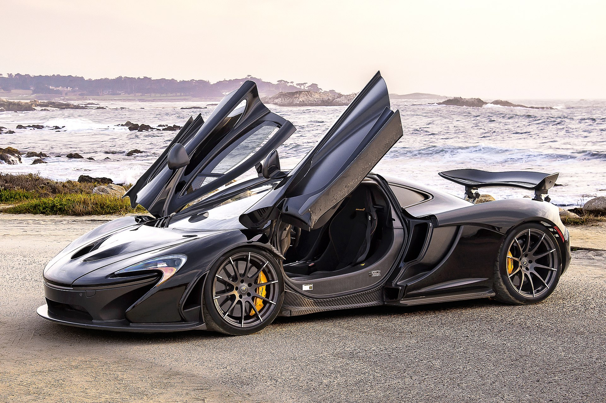

My Website
Sport cars
 Home
Home About us
About us Contact
Contact

P1
McLaren
The McLaren P1 is a sports car produced by British marque McLaren Automotive. It is a plug-in hybrid with a mid-engine layout. It was first shown at the 2012 Paris Motor Show, with sales of the P1 beginning in the United Kingdom in October 2013 and all of the limited run of 375 units sold by November 2013.
Senna
McLaren

It is the fastest track-focused road hypercar we have ever built, and it will set the fastest lap times of any McLaren to date. That is what has driven us to build a track car that is unashamedly without compromise. One that is legalised for road use, but not sanitised to suit it. Nothing else matters but to deliver the most intense driving experience around a circuit.
About me
Dealer
We like and we sold cars
Popular post